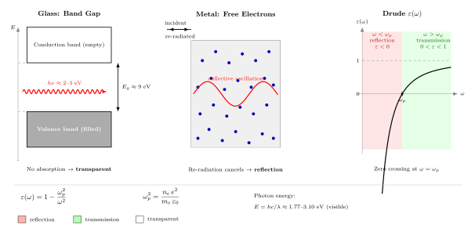

玻璃为什么透明, 金属为什么反射?
把一枚硬币贴在玻璃窗上, 从外面看, 玻璃那部分让光毫无阻碍地穿过, 硬币那部分却把阳光硬生生地反回来. 两者都是固体, 都"塞满"了电子 —— 玻璃里每个 Si 和 O 各带着一圈价电子, 铝里三个 3s/3p 电子干脆离开原子核, 漂在晶格间. 凭什么同样的电磁波, 一种电子让它通行, 另一种让它调头?
上一节我们在真空里把光处理成了 Maxwell 方程的最洁净解: 没有电荷没有电流, 电场和磁场互相孕育, 以 $c=1/\sqrt{\varepsilon_0\mu_0}$ 自走自行. 一旦入射到物质里, 这个洁净方程立刻要被改写 —— 介质里的电子会在电场驱动下位移、振荡, 它们自己又成为次级辐射源. 光到底穿过去还是被挡回来, 完全取决于这群电子按什么方式响应. 这一节我们要做的, 就是把"电子如何响应"这个黑箱拆成两个干净的极限: 一个是玻璃里被束缚在能带间的电子, 一个是金属里几乎自由的电子海.
一、玻璃的透明: 带隙比光子能量还大
先看玻璃. 非晶态二氧化硅 (SiO₂) 的电子结构可以近似用一个简单的带图来描述: 一条填满的价带, 一条空荡的导带, 中间被一个很宽的带隙 $E_g$ 隔开. 量子力学告诉我们, 电子只能从填满的态跳到空态 —— 价带里的电子要吸收一个光子, 光子的能量必须至少等于把它抬上导带的门槛 $E_g$. 如果光子能量不够, 它就找不到一个能响应它的电子, 只能继续往前走.
这个"门槛"的数量级可以直接代入数字来体会. 二氧化硅的带隙在 $E_g \approx 9~\text{eV}$. 可见光的光子能量多少呢? 红光波长约 700 nm, 蓝光约 400 nm, 用 $E=hc/\lambda$ 估算:
$$ E_\text{红} = \frac{1240~\text{eV·nm}}{700~\text{nm}} \approx 1.77~\text{eV}, \qquad E_\text{蓝} \approx 3.10~\text{eV}. \tag{1}$$
无论是红光的 1.77 eV 还是蓝光的 3.10 eV, 都远远低于 9 eV 的带隙. 这相当于你拿着一张只能跳 1 米高的腿, 面对一堵 3 米高的墙 —— 根本跳不上去. 价带里的电子接不住这个光子, 于是整束可见光通过玻璃时几乎没有能量被吸收, 这就是透明.
那玻璃什么时候不透明? 把光子能量抬到 9 eV 以上, 也就是深紫外波段 (波长短于约 140 nm), 电子终于能被激发上去, 玻璃立刻变成强烈的吸收体. 这就是为什么标准石英窗在紫外 A、B 段还能用, 到真空紫外就必须换成氟化镁或氟化钙窗片 —— 它们的带隙更大, 能再挡住更短的紫外. "带隙决定透明窗口"这件事, 化学家和光学家靠它设计每一片镀膜和每一只灯泡外壳.
二、金属的反射: 自由电子的集体反抗
金属里的故事完全不同. 铝、金、银的价电子脱离了它们原先的原子核, 在晶格里构成一片"电子海". 没有带隙, 电子从连续的导带态出发, 只要有能量就能动 —— 这让金属天然是导电体. 但"能吸收任何能量"并不等于"光被吸进去而消失", 恰恰相反, 它几乎总是先把能量再辐射回去.
Drude 在 1900 年给出了这个响应的最早图像: 把金属里的电子视作经典自由粒子, 密度为 $n_e$, 质量为 $m_e$, 在外电场 $E(t)=E_0 e^{-i\omega t}$ 的驱动下作受迫运动. 忽略碰撞阻尼, 单个电子的运动方程是 $m_e \ddot{x} = -eE$, 于是 $x=eE/(m_e\omega^2)$, 它贡献的极化强度是 $P=-n_e e x = -n_e e^2 E/(m_e\omega^2)$. 代回 $D=\varepsilon_0 E + P =\varepsilon_0\varepsilon(\omega) E$, 得到
$$ \varepsilon(\omega) = 1 - \frac{\omega_p^2}{\omega^2}, \qquad \omega_p^2 = \frac{n_e e^2}{m_e\varepsilon_0}. \tag{2}$$
这条式子就是 Drude 介电函数, 里面的 $\omega_p$ 叫做等离子频率 —— 它是自由电子气集体振荡的固有频率, 所有金属光学行为的第一个量纲标尺.

让我们读一下 (2) 式的符号. 当 $\omega<\omega_p$ 时, $\varepsilon(\omega)<0$, 折射率 $n=\sqrt{\varepsilon}$ 变成一个纯虚数, 波数 $k=n\omega/c$ 也是纯虚的 —— 这意味着入射波进入介质后以指数衰减, 根本无法把能量带到远处. 物理上, 自由电子被电场推着振荡, 它们再辐射出的次级电磁波恰好与入射波相干相消, 净效果就是把入射波原路顶回去. 这就是金属的反射.
当 $\omega>\omega_p$ 时, $\varepsilon(\omega)>0$, 折射率重新变回实数, 电子再也跟不上如此之快的电场, 它们的集体振荡落后于驱动, 再辐射不再能完全相消入射波, 于是光可以像在透明介质里那样传入金属. 这是金属光学最反直觉的部分: 对足够高频的光, 金属其实是透明的.
三、把 $\omega_p$ 算出来: 铝、金与紫外
要让这套图像落到地面, 必须把 $\omega_p$ 数出来. 以铝为例, 晶格常数约 4.05 Å, 面心立方结构每胞 4 个原子, 每个原子贡献 3 个价电子, 自由电子密度
$$ n_e^{\text{Al}} \approx \frac{4\times 3}{(4.05\times 10^{-10})^3}\approx 1.8\times 10^{29}~\text{m}^{-3}. $$
代入 (2) 式的 $\omega_p$, 用 $m_e\approx 9.11\times 10^{-31}$ kg, $e\approx 1.60\times 10^{-19}$ C, $\varepsilon_0\approx 8.85\times 10^{-12}$ F/m:
$$ \omega_p^{\text{Al}} = \sqrt{\frac{1.8\times 10^{29}\cdot (1.60\times 10^{-19})^2}{9.11\times 10^{-31}\cdot 8.85\times 10^{-12}}}\approx 2.4\times 10^{16}~\text{rad/s}. $$
换成能量 $\hbar\omega_p \approx 1.05\times 10^{-34}\cdot 2.4\times 10^{16}/1.6\times 10^{-19}\approx 15~\text{eV}$. 这相当于波长约 83 nm 的真空紫外 —— 整个可见光与紫外 A、B 段都远在 $\omega_p^{\text{Al}}$ 之下, 所以铝对从无线电到近紫外几乎全反射. 实验上, 新鲜蒸镀的铝膜反射率在可见波段稳定在 90% 以上, 正是这个道理. 天文台把大镜子镀铝, 靠的也是这同一条不等式.
对比一下金. 金的 5d 电子比较深, 实际参与自由输运的主要是 6s 电子, 有效自由电子密度比铝小, 外加 5d→6s 的带间跃迁在蓝绿波段产生额外吸收, 两者合起来把金的有效等离子频率压到 $\hbar\omega_p^{\text{Au}}\approx 9~\text{eV}$ 附近, 并且在蓝绿光区出现一条明显的吸收带. 这就是为什么金在红橙波段依然强反射, 却把蓝绿光吸掉了相当一部分 —— 反射回眼睛的光富集红黄分量, 合成我们熟悉的金色. 颜色, 在这里只是 $\omega_p$ 和带间吸收的一种联合作用.
四、两条极限: X 射线与射频
任何物理图像都要经得起极限检验. 我们把频率一路拉到两端, 看这套 Drude-带隙图像会不会自洽.
先往高频推. 医用 X 射线的光子能量在 50-150 keV, 比金属 $\omega_p$ 高出三四个量级. 按 (2) 式, 这时 $\varepsilon\to 1$, 折射率几乎就是 1, 所有金属、所有玻璃对 X 射线都"透明" —— 电子再也跟不上这么高速的电场振荡. 这正是 Röntgen 在 1895 年能用 X 射线拍下夫人手骨影像的关键: 骨头中钙原子的内层电子对 X 光有明显吸收, 软组织不吸收, 透射图就是一张天然对比照. 一束能穿透皮肉的电磁波还是电磁波, 只是频率高到让外层电子集体歇业.
再往低频推. 射频 (MHz-GHz) 对应的光子能量只有 $10^{-8}$-$10^{-5}$ eV, 远远低于任何金属的 $\omega_p$, 也远远低于玻璃带隙; 但这里决定行为的不再是玻璃带隙, 而是自由载流子. 海水里有离子, 湿土里有水, 它们都贡献等效电子密度, 于是对几千 MHz 以下的射频波也表现出金属式的反射 —— 这就是雷达能在水面上反射、潜艇必须浮上来才能接收 GHz 通信的原因. 低频端的限制不是材料学问题, 而是"有没有足够多的可动电荷". 从另一头看, 铜天线之所以能接收无线电, 正是因为它对这段频率完全反射, 只在极薄的表皮层吸收, 再把能量灌进后级电路.
这两头一对照, Drude 的 $\omega_p$ 和能带的 $E_g$ 就像两道门: 光子能量过低过高都通行, 只在中间的某条带被拦下. 每一类材料有它自己的这两个门, 组合起来就把电磁波谱切成不同的通道. 顺便一提, Drude 的自由电子图像虽然抓到了骨架, 但它假设经典粒子; 后来 Sommerfeld 在 1927 年把电子填到费米-狄拉克分布里, Bloch 又在 1928 年让它们在周期势中跑起来 —— 这些改进到 1933 年前后成熟为金属的量子理论, 给出了为什么不同金属的 $\omega_p$ 略微不同, 为什么反射率在某些波段会掉一块 (像金的蓝绿吸收). Lorentz 的电子理论早在 Drude 之前就把束缚电子当阻尼振子处理, 带隙材料的介电响应正是其一个特例. 一百多年下来, 这套图像被改写了, 但框架没换.
小结
"玻璃透明、金属反射"表面是两种外观, 本质是介质电子对同一束电磁波的两种响应方式. 玻璃的束缚电子有一条带隙 $E_g$, 光子能量低于它就无处可去, 只能直穿; 金属的自由电子有一个等离子频率 $\omega_p$, 光子频率低于它就被集体振荡再辐射弹回. 两条不等式把电磁波谱切成透明、反射、吸收三类窗口, 各种玻璃、各种金属只是在这个共同框架里占据不同位置 —— 包括我们见到的金色、银色与钢灰. 在"光是什么"这场追问里, 这一节给出的是光遇到物质的第一张分流图: 光依然是 Maxwell 方程的电磁波, 但它走哪条路, 完全由对方的电子能谱决定. 下一节我们要在这张分流图上加一层厚度: 当反射面不再是块体而是薄膜, 两面反射波之间的干涉会让颜色从等离子频率转回波长本身 —— 肥皂泡、蝴蝶翅膀、增透镀膜的彩色从此上场.
▲